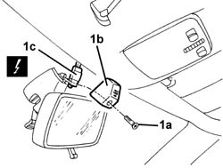
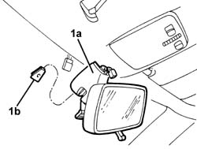
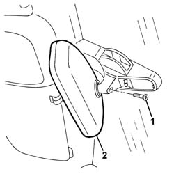

7065C68 rear view mirror - r+r
- Path
- Procedures > 70 FITTINGS > 7065 SEAT BELTS AND ACCESSORIES > 7065C accessories and decorations > 7065C68 rear view mirror - r+r
- Kind
- repair procedure (removal / refitting; the operation number is the code)
- Applies to
- all engines; all production periods
- Interactive page
- https://sloeber94.github.io/elrnDB-a156/en/#/3238989
Applies to: all engines; all production periods
 Removing
Removing
 Refitting
Refitting1. Only for vehicles equipped with a Telepass holder. Undo the bolt (1a), move the trim (1b) and disconnect the electrical connection (1c).
 | Name | Connector |
|---|---|---|
1c | TELEPASS" connection" |

Applies to: all engines; all production periods
1. Lift up the mirror support (1a), by lifting it upwards out of the retaining mounting (1b) secured to the glass.

Applies to: all engines; all production periods
Refitting
RemovingCheck that the mirror support is not damaged.
Lower the mirror mount down to fit it into the retaining block secured to the glass.
Check that the support is firmly secured without clearance.
Connect the electrical connection
Position the trim and tighten the bolt.
Applies to: all engines; production: da 03/02 a 09/03, da 10/03
Removing
Refitting1. Undo the bolt fixing the mirror joint.
2. Remove the internal rear view mirror.

Applies to: all engines; production: da 03/02 a 09/03, da 10/03
Refitting
RemovingCheck that the door mirror is not damaged.
Place the mirror in position and secure it using the bolt
Check that the rear view mirror moves smoothly.
Topics linked from this page (1)
Topics that link to this page (8)
- 5505C41 cabin wiring - r r
- 7030B12 sliding roof (assembly) - r+r
- 7030B46 sun roof cables , one , lh or rh - r r
- 7030B50 sun roof guide , one , lh or rh - r r
- 7035A14 (Bonded type) windscreen GLASS - R.R. - Includes. cleaning edges of glass and housing in bodyshell
- 7035A18 windscreen glass r r including cleaning of housing
- 7040H10 roof panel lining - r r
- 7040H16 roof panel lining - r r